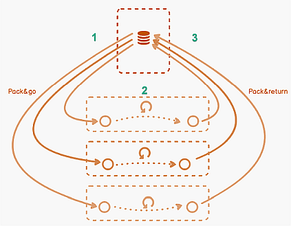

打包工作流程
Pack & Go 文件是一个压缩数据容器，用于存储在 ABT 站点中配置的工程数据。 Pack & Go 文件可用于将工程数据从工程 PC 传输到调试 PC。
Typical workflow in 3 steps

- The project leader creates, engineers ABT Site project, and delivers the work package (Pack & Go file) to a technician.
- The technician does engineering and commissioning on site with ABT Site and delivers the work package (Pack & Return file) back to the project leader.
- The project leader merges engineering and commissioning data by importing back the work package.
Pack & Go 容器也可以由第三方传递和设计。现场可添加新的应用程序模板和最多 25 个设备。
您可以在以下主题中找到有关使用 Pack & Go 容器安装和平衡 ABT 项目的更多信息。
Installing an ABT project (with subcontracting)
Balancing air/water (with Pack & Go)
创建 Pack & Go 文件后，构建层次结构、设备和相应的应用程序模板将锁定在原始项目中。原始项目是创建 Pack & Go 文件的项目。
Restriction on locked devices and templates (inside original project)
- The template configuration cannot be changed
- Instance parameters cannot be changed
- Instance properties (naming, BACnet IP / BACnet MS/TP etc.) cannot be changed